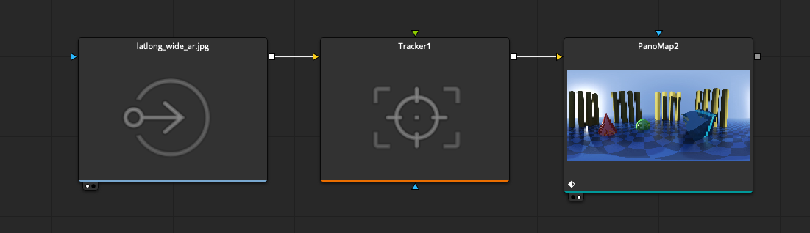
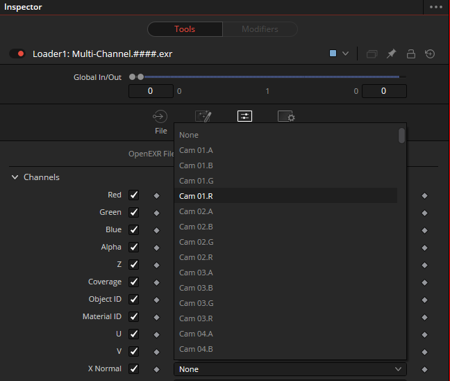

360VR Stitching Tools
Scrivener Export - Reformatting Needed!
This article is an export of a Scrivener document. It will definitely need at least some reformatting to work in Obsidian and MkDocs. Delete this note once the article's formatting has been fixed to some extent.
Google VR180 Creator¶
Google VR180 Creator
If you are exploring VR180 workflows with BMD Resolve/Fusion, it is handy to have a copy of the "Google VR180 Creator" program to be able to easily inject the SBS 180 metadata tags into your final MP4 video file.
Step 1. Google in their infinite wisdom removed the VR180 Creator tool from their website recently but a copy of the program for macOS/Windows/Linux is available for download from the Internet Archive "Wayback Machine" snapshot of the site.
Step 2. Drag the "VR180 Creator.app" file from the disk image into your macOS Applications folder.
Step 4. If you are on a macOS Monterey system you will likely have to edit the "System Preferences > Security & Privacy > Full Disk Access" settings to allow the application to run.
Using the VR180 Creator App With 180x180 FOV Center-Cropped LatLong Image Projection Based Media¶
Using the VR180 Creator App With 180x180 FOV Center-Cropped LatLong Image Projection Based Media
After launching the VR180 Creator app you have several options to choose from. We want to add VR180 metadata to an existing MP4 video that was exported from Resolve/Fusion already.
Select the "Prepare for Publishing" option.
Drag an MP4 video into the window, or select the file manually from your hard disk by clicking on the blue "Select" button in the center of the view.
Customize the "Prepare for publishing" settings before exporting your video:
Viewing the Finished VR180 Metadata Injected Movie in YouTube's VR media player allows you to pan-and-tilt the view to navigate around the scene:
KartaLink Media Command¶
KartaLink Media Command
Media Command is a scriptable interface for batch processing content that resides in your Resolve Media Pool. This streamlines the process of selecting footage, and running automation scripts on those specific items.
When Media Command is launched it automatically scans for Lua and Python scripts that are located on your hard disk inside the "Reactor:/Deploy/Scripts/MediaCommand/" folder. These items are added to the "Command Script" ComboMenu in the interface.
If you are a long time Fusion user, you will find the Media Command script was designed to give your Media page content management operations the same power and flexibility as you have with a Fusion page "tool" script in the Fusion nodes view context.
Media Command Resources:
- Media Command | Reactor Repo Markdown Docs
- WSL | [RELEASED] KartaLink | Media Command
- WSL | Resolve Media Pool "Script" Menu Entry
- BMD Forums | DaVinci Resolve Feature Requests | Media Pool "Script" Menu Entry
Media Command Docs¶
Media Command Docs
Search Controls¶
Search Controls
The "Type:" ComboMenu allows you to limit the tree view to show only media of a certain format. The menu options are: "All", "Still", "Video", "Video + Audio", "Audio", "Compound", "Fusion", "Generator", "Geometry", "Stereo", "Subtitle", and "Timeline".
The "Search:" text field allows you to narrow down the results in the tree view with plain text search of the "Clip Name" and "File Name" records.
The "Select: (All) (None) (Invert)" buttons can be used to quickly modify the footage that is selected in the tree view. It is worth noting that the select buttons work on the content that is visible in the tree view at the current moment so you can apply the select buttons to the filtered search results, then flip back to the full unfiltered list of content in the tree view.
Script Controls¶
Script Controls
The "Command Script:" ComboMenu allows you to select a Lua or Python script you would like to run.
The (Edit) button will open the active command script using the script editor defined in the Fusion preferences.
The (Go!) button will run the active command script and use it to process the media that is selected in the tree view.
View Controls¶
View Controls
If the "Keep Open" button is active, the Media Command window will remain open after a script is launched. This is handy if you need to batch process multiple clips in rapid succession. If this button is inactive the Media Command window will close each time a script is run.
The "Console" button toggles the visibility of the Console window. If you need to troubleshoot a script there is likely useful diagnostic information already visible in the Console.
The "Refresh" button allows you to reload the tree view listing. This is something you might want to do after modifying the content in the Media Pool/Media page, or if you have changed the currently active bin.
Script Usage¶
Script Usage
Step 1. Place your custom .lua or .py scripts into the "Reactor:/Deploy/Scripts/MediaCommand/" folder.
Step 2. Launch the Media Command script from the Resolve "Workspaces > Scripts > Edit > Kartaverse > KartaLink > Media Command" menu entry.
Step 3. Select the footage you would like to batch process by clicking on the tree view row entries in the Media Command window. At the moment you need to click on the actual "text" words on the row to toggle the "selected" checkbox state.
Step 4. Choose a script you would like to run on the selected media using the "Command Script" ComboMenu, then press the "Go" button.
Creating a Media Command Script¶
Creating a Media Command Script
When a script is launched it has an "args" global variable that holds a plain text formatted Lua table structure.
Note: If you are using Python scripting in Resolve v18, you might have to set Resolve to use Python 2.7 if the built-in API command "bmd.readstring()" is unable to convert a plain text formatted table into a Python dict. This is done in the "Fusion > Fusion Settings..." menu item. Switch to the "Script" section on the left side of the view and then enable the "Default Python Version > Python 2.7" option in the window.
Bundled Scripts¶
Bundled Scripts
Copy File Name.lua
Copies the file names from the selected footage into the clipboard buffer.
Copy File Path.lua
Copies the absolute file path from the selected footage into the clipboard buffer.
Copy JSON.lua
Copies the clip properties as JSON formatted data into the clipboard buffer.
Copy Lua Table.lua
Copies the clip properties as Lua table formatted data into the clipboard buffer. This format of data can be reimported with the Fusion based Vonk data nodes directly into a ScriptVal.
List Args
Outputs a Lua table/Python dict with the active clip properties to the Console window.
List Clips
Outputs the clip name from the selected footage to the Console window.
XR/Add MediaIn to Comp.lua
Adds the selected images to the currently open Fusion compositing session. The clip properties are automatically added to each of the MediaIn node "Comments" fields. This allows you to create Text+ node based burn-ins from any of the Clip properties with the help of a Text+ node StyledText field expression.
XR/Send to DeoVR.lua
Opens a new DeoVR Player on Windows session where the currently selected images are auto-loaded into the media playback tool.
XR/Send to PTGui.lua
Opens a new PTGui session where the currently selected images are auto-loaded into the project.
Example Comps¶
Example Comps
Clip Lua Table to ScriptVal.comp
This example shows how "Copy Lua Table" script exports can be used with the Vonk data nodes.
The file available on-disk at the following PathMap location:
Reactor:/Deploy/Comps/Kartaverse/KartaLink/Media Command/Clip Lua Table to ScriptVal.comp
TouchDesigner Real-Time Immersive Workflows¶
TouchDesigner Real-Time Immersive Workflows
TouchDesigner is a node-based real-time visual creation environment.
TD's initial development roadmap branched off from its parent app, SideFX Prims/Houdini, in the early days of things but the program still shares many of the same paradigms, crazy acronyms, and ideas.
The commercial version of TD can be licensed using several methods including a CodeMeters based cloud-floating license, or a hardware USB dongle.
There is a free non-commercial edition of TD that you can get started with that is limited to 720p output but otherwise has all the other main features enabled for learning.
TD Links:
- https://derivative.ca/download
- https://derivative.ca/learn
- https://derivative.ca/UserGuide/TouchDesigner
TouchDesigner is a good choice for building a custom node-based panoramic 360VR video stitching environment with support for multiple video input streams from capture hardware or IP network video streams. It supports depth sensors, a wide range of HID input devices, and VR HMDs.
TD 360VR Stitching Resources:
- YouTube | Hugh Hou | Edit Canon R5C & R5 VR180 w/ DaVinci Resolve 18 FREE - 3D 8K 60fps RAW LT Clog3 Workflow
- WarpStitch + STMap + Canon R5C + RF 5.2mm Dual Fisheye VR180 Example Project (720 MB)
Real-Time Video Stitching with TouchDesigner + KartaVR + STMaps¶
Real-Time Video Stitching with TouchDesigner + KartaVR + STMaps
Building the STMap Warping Node-Graph in TD
This video stitching approach works live and real-time in TouchDesigner. It uses a pre-made STmap template image to warp Canon R5C + RF 5.2mm dual fisheye imagery into a 180VR Side-by-Side layout.
This example requires you to have a custom STMap template image created beforehand which is a task KartaVR can help with.
For more information about ST Maps check out the article:
https://docs.google.com/document/d/1lQ-wc9ucLJqj-HL7iKMNWA71klV5O1fk2-JicRB6gDY/edit?usp=sharing
Step 1. Create a new TouchDesigner project. Set the End/REnd frame range to the duration of the video footage you want to export. Customize the FPS parameter to 60 fps.
Step 2. Use a MovieFileIn node to load an STMap template image named "Media/EOS_R5C_RF52_STMap.0001.exr".
Step 3. Use a node to bring in the Canon R5C video footage.
You can import a pre-existing movie file from disk using a "MovieFileIn" node.
Or
You can import a live video feed into TouchDesigner with the help of either an NDI video stream, or a video capture card.
Step 4. Add a "Remap" node. Connect the Canon R5C footage and the STMap footage to the input connection on the Remap node.
Step 5. Add a MovieFileOut node and connect it to the Remap node. This is how the finished footage is exported from TouchDesigner.
Choose if you want to save out an image sequence or a movie file.
Then customize the File attribute to define the filename for rendered footage.
When you toggle on the "Record" button", the MovieFileOut footage will be written to disk. You can turn on the "Pause" button if you want to pause the export process.
It is a good idea to turn off the "[x] Realtime" checkbox at the top toolbar area in TouchDesigner if you are offline rendering a Movie file to disk and don't want to have any skipped frames.
Step 6. If you want you could enable pushing footage out to an HMD in real-time, or to an HDMI video output connection, or to a real-time internet video streaming platform with the "videostreamout" node.
Fusion Studio Based STMap Template Creation
STmap Creation.comp
This example processes Canon EOS 180VR footage filmed with a Canon EOS R5C Camera Body and a Canon RF 5.2mm Dual Stereo Fisheye 190 Lens.
A CustomTool node was used to create the source ST Map default gradient pattern of a red and green gradient color.
Fusion's right-click in the node view > Copy/Paste Instance contextual menu items were used to duplicate the RGB color warping nodes and make an instanced version of the nodes that automatically mirror those settings. This allowed us to swap out the RGB imagery and run an ST map warping template through in their place.
Then a Combiner node merged the left and right eye views' STMap warping templates into a side-by-side format.
The STMap warping template was then saved to disk as a single frame duration still image.
An STMap template needs to be saved in a high dynamic range format like a 16 bit or 32 bit per channel image format. The EXR image format makes a good output choice and you can use any 100% lossless image codec such as ZIP or None.
A ChangeDepth node was added just before the CustomTool to push the frame buffer to a floating-point high dynamic range format (32-bit float). This ensures we aren't working with a gradient image that is low-dynamic range for the rest of the comp.
For more information about ST Maps check out the article:
STmap Rendering.comp
This composite uses a pre-made STmap template image to warp Canon R5C + RF 5.2mm dual fisheye imagery into a 180VR Side-by-Side layout. The template was created with the help of the KartaVR WarpStitch fuse.
This example uses the STMapper fuse for warping the STmap template which is available in the Reactor Package Manager.
A stereo 3D preview of the scene is viewed with an anaglyph node and the kvrReframe360Ultra fuse which is available in the Reactor Package Manager.
Resolve VR180 Warping via STMapperInline¶
Resolve VR180 Warping via STMapperInline
This approach works in the Resolve Studio Edit page. It uses a pre-made STmap template image to warp Canon R5C + RF 5.2mm dual fisheye imagery into a 180VR Side-by-Side layout.
This example requires you to have installed the STMapper fuse and the STMapperInline "Effects Template" macro which are available in the Reactor Package Manager.
For more information about ST Maps check out the article:
Step 1. Create a new Resolve Studio project.

Step 2. Edit the project settings.
Set the Master Settings to use a Timeline format > Timeline Resolution of 8192x4096 px processing.
Set the Timeline Format > Playback frame rate to 59.94 frames per second.
Set the Image Scaling to use an Input Scaling > Mismatched resolution files > Stretch frame to all corners.
Set the Output Scaling to Mismatched resolution files > Stretch frame to all corners.
Step 3. Add the movie file to the Resolve Media Pool. Create a new timeline based upon the clip.
In the "Create New Timeline" dialog uncheck "[x] Use Project Settings".
Switch to the Format tab and enable Timeline Resolution 8192 x 4096 processing.
Timeline Frame Rate 59.94 fps. Mismatched Resolution Stretch frame to all corners.
Step 4. In the Edit page, open the "Effects" tab at the top left of the user interface. Expand the "Toolbox > Effects > Stitching" section. Select the "STMapperInline" item and drag it onto the video clip in the Edit page timeline.
Step 5. Expand the Edit page "Inspector" tab. Switch to the Effects section in the Inspector window. Select the STMapperInline item.
Click the "Browse" button and navigate on your hard disk to where this example project file is stored to select the STMap warping template image named: "STMap Canon R5C RF 5.2mm/Resolve Project/Media/EOS_R5C_RF52_STMap.0001.exr".
After a moment the Edit page preview window should show the results of the STMap warping the dual fisheye imagery into a side-by-side 180VR cropped 180x180 LatLong view layout.
Step 6. You can now edit the footage.
Step 7. The footage is then rendered via the Delivery page. If you are on a macOS system a good output format might be to use:
Render Settings > Custom
[x] Export Video
Format: QuickTime
Codec: Apple ProRes
Type: Apple ProRes 422 HQ
Resolution: Custom
8192 x 4096 px
Frame Rate: 59.94 fps
PTGui Pro Batch Automated Workflows¶
PTGui Pro Batch Automated Workflows
PTGui Pro is the golden standard of panoramic 360VR stitching programs. For pipeline automation needs it has a powerful feature called batch-builder that lets you automate repetitive tasks like bulk stitching of HDRIs, or automatically stitch multi-view image sequences.
The Batch-Builder mode needs image sequences to be broken down into numbered folders for each timeline frame. Each folder holds all of the camera views for one specific frame number from the image sequences. Then a PTGui .pts file is copied into that folder.
You can then use the Batch-Builder user interface in PTGui Pro to process this media.
Alternatively, you can control the PTGui command line task from a render manager like Deadline, or a toolset like Houdini TOPs, or a Fusion composite running Vonk Data Nodes.
PTGui Uses a JSON Based Project File Format¶
PTGui Uses a JSON Based Project File Format
A big change for PTGui v11-12+ project files is that they are stored in a JSON format. This means both the Notepad++ for Fusion atom package in the Reactor, and the Vonk JSON data nodes in Fusion can be used to interactively read every single attribute on the fly.
A Summary of the PTGui Pro .pts JSON Hierarchy
PTGui .pts Image Name
project.imagegroups.[#].images.[1].filename
Camera View Data
project.imagegroups.[#].maskbitmap = 2be950115163281b1954bd0cf1951d00
project.imagegroups.[#].images.filename = "Media/CameraA.0001.jpg"
project.imagegroups.[#].images.include = true / false
project.imagegroups.[#].size = [2700,2700]
project.imagegroups.[#].position.params.yaw
project.imagegroups.[#].position.params.pitch
project.imagegroups.[#].position.params.roll
project.controlpoints.[#] = {"t":0,"0":[1,0,580,1306],"1":[2,0,2388,1305]},
project.panoramaparams.hfov
project.panoramaparams.vfov
project.panoramaparams.projection = equirectangular
project.panoramaparams.outputcrop = [0,0,1,1]
project.globallenses.[#].lens.params.focallength
project.globallenses.[#].lens.params.cropcircleradius
project.globallenses.[#].lens.params.cropcenteroffset
project.globallenses.[#].lens.params.a
project.globallenses.[#].lens.params.b
project.globallenses.[#].lens.params.c
project.globallenses.[#].shift.params.longside
project.globallenses.[#].shift.params.shortside
PTGui .pts Mask Base64 Encoded PNG¶
PTGui .pts Mask Base64 Encoded PNG
assets.[#].data
Each of the hand-painted masks created in PTGui for an individual camera view is saved into the .pts file as a JSON record that holds an inline Base64 encoded PNG image.
The image framebuffer uses an indexed color palette with support for 3 un-anti-aliased colors; black (unpainted), red (exclude zone), and green (include zone).
Individual Mask Base64 Data Record
assets.data
assets.id = 2be950115163281b1954bd0cf1951d00
Using PTGui Batch Builder with KartaVR¶
Using PTGui Batch Builder with KartaVR
The KartaVR toolset includes two Lua-based automation scripts called "PTGui BatchBuilder Creator" and "PTGui BatchBuilder Extractor" which can be used to bring multi-view media into and out of a numbered-folder hierarchy.
Using PTGui with Vonk Ultra¶
Using PTGui with Vonk Ultra
The Vonk Data Nodes also provide several example .comp files that show approaches for automating a PTGui workflow.
Virtual Production Cylinder Stitching Example¶
Virtual Production Cylinder Stitching Example
This KartaVP stitching example shows an interesting workflow that interactively stitches a PTGui Pro v12 .pts file inside of Fusion's node graph via a RunCommand node.
Then Vonk JSON and Vonk Text data nodes work together to parse the JSON formatted .pts file to extract the relative file path location of the PTGui Pro v12 Batch rendered HDRI panoramic image.
Finally, a simulated virtual production LED video stage wall is created using Fusion's 3D workspace. The latest PTGui Pro stitched imagery is automatically placed onto this LED video wall surface. A Camera3D node can then be flown around inside the virtual production stage filming volume to create reframed shots with the wrap-around live-action background plate visible.
This sample footage was captured using a Nikon D750 Camera with an AF DX Fisheye-Nikkor 10.5mm F/2.8 ED lens. A Nodal Ninja panoramic head was adjusted to an indexed rotation value of 15 degrees per view rotation increment, and 12 view angles were captured in the Nikon RAW NEF image format starting at 1:30 AM, local time on 2021-12-08.
Each photo was HDR exposure blended from a set of three RAW images taken at +3EV, 0EV, and -3EV. The pictures had an average of a 30 second exposure time, ISO 1600, aperture F/8, and the content was captured using a manual exposure mode.
SGO MistikaVR Stitching Workflows¶
SGO MistikaVR Stitching Workflows
SGO MistikaVR is a popular program for stitching 360VR videos with optical flow seaming. It supports the import of PTGui .pts project files for new camera rig template creation, and is capable of exporting STMaps that bake out the lens template setting used.
Mistika Boutique offers a wide range of online finishing features to expand on the 360VR stitching capabilities users get with MistikaVR. SGO also has a node-based video encoding and workflow automation tool that is appropriately called Mistika Workflows.
SGO Mistika is available on a subscription plan.
Distributed MVR Stitching Via a Render Farm¶
Distributed MVR Stitching Via a Render Farm
MistikaVR has command-line support which allows for external render manager based control and job distribution using programs like Amazon AWS Deadline.
This allows you to build a mini-render-cluster on a LAN network or in the cloud to speed up your immersive workflows when taking on ultra-high resolution stitching tasks of footage over 8K-16K+ resolution.
A MVR distributed rendering process becomes relevant if you start to create live-action captured backgrounds for virtual production LED video stage productions that need extreme image quality and lightning-fast turnaround times.
You can use a combination of the "Submit MistikaVR Job to Deadline" controls for the "Pool", "Concurrent Tasks", "Machine Limit", and "Machine List" settings to hone the exact job distribution parameters to meet your GPU-powered render farm's precise hardware capabilities and scale.
The "Frames Per Task" control specifies how many frames are sent to an individual render node in a single job task. Setting a lower value might protect against memory leaks and GPU glitches from accumulating. Setting a higher value reduces the startup time overhead for launching a new MVR task.
StitchEm VideoStitch Studio + VahanaVR¶
StitchEm VideoStitch Studio + VahanaVR
VideoStitch Studio and VahanaVR played an important role in the development of the 360VR stitching market. Eventually Orah and other products came to market from the same company.
https://github.com/stitchEm/StitchEm
https://github.com/stitchEm/camorah
VideoStitch Studio User Interface:
VahanaVR User Interface:
License¶
License
VideoStitch Studio is an MIT-licensed open-source project. A license key is not required to run the software. The software was originally developed by VideoStitch SAS. After the company folded in 2018, the source code was acquired by the newly founded non-profit organization stitchEm, to publish it under a free software license.
StitchEm Resources:
StitchEm GitHub Release Page¶
StitchEm GitHub Release Page
You can download the various StitchEm builds for macOS and Windows from the project's GitHub Releases page. Take note of the GPU support requirements for each of the software releases to line that information up with your system's actual hardware.
StitchEm Reactor Package Manager Based Install¶
StitchEm Reactor Package Manager Based Install
Both the StitchEm VideoStitch Studio and VahanaVR programs are available in the Reactor package manager's "Bin" category for Windows users.
Resolve/Fusion HMD Connectivity¶
Resolve/Fusion HMD Connectivity
When you are running Resolve Studio (the Paid edition of Resolve) you can connect to an HMD inside the Fusion page compositing session environment. This is done by opening up the "Fusion > Settings..." menu.
In Fusion Studio Standalone this settings change is done by opening the "Fusion Preferences" menu item.
Then in the Fusion page settings window select the category on the left side of the window labelled "VR Headset". In this "VR Headset" section you can adjust the HMD settings to match your personal needs. With the HMD Support in the Resolve Fusion page, you can use Oculus SDK, and OpenVR based HMDs. The same approach works inside of Fusion Studio Standalone, too.
If you have an Oculus Quest HMD you can tether this HMD to Resolve's Fusion page as an output device by installing the Windows 10 based "Quest Link" drivers found on the Oculus website (https://www.meta.com/help/quest/articles/headsets-and-accessories/oculus-link/meta-quest-link-compatibility/). Then you connect a USB 3 class cable with a USB-C connector from your PC's USB 3 or 3.1 class USB port to the Quest HMD.
Personally speaking, I'm using a fairly long "Amazon Basics" USB-C cable and it works for my needs, although I wish it had a right angle connector on it like the Oculus Quest default charging cable has since I'm sometimes worried I might put stress on the Quest end of the cable when using room-scale 6DoF approaches with the HMD.
KartaVR WarpStitch Ultra Fuse¶
KartaVR WarpStitch Ultra Fuse
WarpStitch is a hardware-accelerated DCTL fuse for Resolve/Fusion that allows you to warp and stitch fisheye imagery into an equirectangular/spherical/LatLong image projection panoramic video. Floating-point 16-bit per channel, and 32-bit per channel image processing is supported so you can work with bracket merged high dynamic range data and stitch the media into a spherical HDRI.
The DCTL support in WarpStitch allows the same fuse code to run equally well in a cross-platform fashion on Windows/Linux/macOS systems running across CUDA, OpenCL, and Metal GPU hardware.
WarpStitch Ultra was created by David Kohen (Learn Now FX), and Andrew Hazelden (KartaVR for Fusion). Development was made possible based upon code contributions from Chad Capeland's CustomShader3D project, and DCTL code examples by BaldAvenger.
WarpStitch Ultra Resources:
- YouTube | Hugh Hou | Edit Canon R5C & R5 VR180 w/ DaVinci Resolve 18 FREE - 3D 8K 60fps RAW LT Clog3 Workflow
- WarpStitch + STMap + Canon R5C + RF 5.2mm Dual Fisheye VR180 Example Project (720 MB)
Open-Source Software License Terms:
The WarpStitch fuse is Apache 2.0 licensed.
DCTL Fuse Support Requirements:
- An OpenCL, CUDA, or Metal based GPU
- Fusion Studio 17-18+ or Resolve 17-18+
Known Issues:
- IMU Control page code not active yet
- Stereo3D Control page code not active yet
- Panotools A/B/C lens distortion code not present yet in lens distortion controls
The WarpStitch Ultra User Interface¶
The WarpStitch Ultra User Interface
An Introduction to WarpStitch Ultra¶
An Introduction to WarpStitch Ultra
1. Use a Loader or MediaIn node in Fusion to import footage that was filmed with a circular fisheye lens. Select this node.
2. With the Nodes view active, press the "Shift + Space" hotkey to display the Select Tool dialog.
Type in "WarpStitch" and then press the "Add" button to insert a new KartaVR WarpStitch node into your composite. WarpStitch should now be connected to your Loader or MediaIn node.
3. It is a good idea to insert an "AutoDomain" node into the composite immediately after a WarpStitch node, so Fusion will effortlessly handle the frame size and aspect ratio changes performed by WarpStitch. An AutoDomain node can be added using the "Shift + Space" hotkey to display the Select Tool dialog. Type in "AutoDomain" and then press the "Add" button.
4. Select the WarpStitch node in your comp. In the Inspector window there is a "View Mode" ComboMenu control, which is at the top of the list of controls for the node.
The "View Mode" ComboMenu lets you switch between seeing the "Final Result", the "Original Image", or a variety of diagnostic modes like "Initial Crop", "Rotated Image", "Vector Mask", "Masked Image", "Warped Image", and "Color Corrected Image" which are useful for inspecting the intermediate stages of internal data processing performed by the WarpStitch node.
There are four tabs present that we need to interact with labeled "Lens", "Color", "Image", and "Settings".
The "Lens" tab provides the controls needed to adjust the warping process including: - Defining the lens center with the "Optical Frame Center" control - Modifying the original image's rotation is possible with the "Image Orientation > Angle" control.
It allows you to choose between 0, 90, 180, and 270 degree rotations. - Applying vector masking to your imagery is done with the "Circular Fisheye Masking" / "Rectangular Masking" / "Split View Masking" controls - Adjusting the FOV for the circular fisheye lens is done with the "Diagonal Field of View" control.
A typical circular fisheye lens might have a 180 degree FOV. - Rotation of the spherical image projection output is done via the Rotate Sphere controls which provide access to rotating the warped image via a set of "Tilt", "Pan" and "Roll" controls. If you wanted to rotate a panoramic image horizontally by 180 degrees you would set the Pan control to 180.
The "Color" tab provides the controls needed to perform basic per-camera view color corrections to help your footage better match up when blended.
The Exposure, Gamma, Levels, and Output Levels controls allow you to adjust the overall brightness and contrast in the image along with the shadows and highlights.
The Saturation and Vibrance controls allow you to make the colors "pop" and appear more vivid. The White Balance section provides Color Temperature and Tint controls which allow you to compensate for per-camera differences in the color of the lighting.
The "Image" tab allows you to adjust the image aspect ratio settings for the final warped image. Additionally, the "Output ST Map" checkbox tells the WarpStitch node to output a "UV Pass" warping template image called an "ST Map" which can be used to store a pre-computed image projection transform into an image's red and green color channels. The "Edge Settings > Edge" control can help fix seam artifacts.
The "Settings" tab allows you to assign your own intool scripting based "Frame Render Scripts", along with providing access to a pair of Edit Code buttons labeled "Edit Fuse" and "Reload Fuse" that can be used to manually tweak the default range of WarpStitch's user interface controls or to adjust any other aspect of the fuse's code.
5. Switch back to the "Lens" tab.
Adjust the "Initial Crop > Optical Frame Center" control to place the onscreen "X" shaped on-screen viewer control in the center of the circular fisheye image.
If you click in the Fusion viewer window so it has the user input focus, you can tap the TAB key several times to quickly toggle the active onscreen control widget so the "X" shaped on-screen viewer control is highlighted in red and can be dragged around visually with your cursor.
Note: If you are working with footage from a 1-piece panoramic camera that places both the front and back fisheye images inside the same image frame in a "SBS" side-by-side layout, you can typically start out by changing the "Optical Frame Center" value from "0.5" over to either "0.25" or "0.75" as an initial starting point before you would then refine the value further.
Change the "View Mode" to "Initial Crop".
The "Initial Crop > Frame Border Padding" slider can be used to help "uncrop" a circular fisheye image that has been captured on a 16:9 video sensor that would cut off part of the circular fisheye image frame area.
If your camera body was rotated when mounted on the panoramic camera rig, you can adjust the "Image Orientation > Angle" setting to correct for this view rotation. The "View Mode" control labeled "Rotated Image" lets you verify the image orientation adjustment is set as you'd expect so you can be sure you have the correct "upright" axis defined for the image before it is warped into a spherical image projection.
6. Change the "View Mode" to "Masked Image" to see the circular masking applied to the imagery.
To adjust the circular fisheye masking setting, you can use the Inspector and drag the slider for the "Vector Masking > Circular Fisheye Masking > Mask Diameter" control to line up with the border of your fisheye lens image data, or the circular shaped onscreen control handle can be used to resize the mask visually.
The "Vector Masking > Circular Fisheye Masking > Mask Softness" slider allows you to adjust how hard or soft you want the mask edge to appear. Additionally, you could set the "View Mode" to "Vector Mask" to see just the black/white masking output if you want to see the precise size of the mask used and its overall softness.
7. The "Warped Image > Diagonal Field of View" control can be adjusted to change the FOV of the circular fisheye image. Typical wide angle fisheye lenses are somewhere in the range of 180 - 220 degree FOV.
You need to change the "View Mode" control to "Warped Image" or "Final Result" to see the effects of the FOV modifications. The Rotate Sphere controls for Tilt, Pan, and Roll are used to adjust the placement of the fisheye image inside the final spherical image projection.
8. Switch to the Color tab. This tab allows you to perform "Quick 'n Dirty" modifications to each of the camera views you are processing. This is a time saver if you need to apply small color tweaks.
The "View Mode" control has a "Color Corrected Image" option that allows you to see the result of these changes. If you need to perform more complex color corrections you could always add a separate ColorCorrector node to the comp per-camera view.
Change the "View Mode" over to "Final Result" to see the effects of all the settings applied at once. This "Final Result" option is the setting WarpStitch should be left at when you are done with all your adjustments and want to look at the footage downstream in your composite.
9. Repeat the main steps shown in sections 1-8 to set up each of the per-camera views you want to warp into a spherical image projection. For speed of adjustment consider using the copy/paste instance approach alongside the Deinstance controls tip to rapidly deploy many near identical camera views.
10. Connect each of the WarpStitch per-camera view processed composite branches together using either a series of Merge nodes chained together, or with a kvrMergeLayers node that supports blending multiple image input connections that are fed into the same node simultaneously.
KartaVR Reframe360 Ultra Fuse¶
KartaVR Reframe360 Ultra Fuse
A DCTL fuse that allows you to reframe your equirectangular/spherical/LatLong panoramic videos to create unique camera angles.
The code was ported by David Kohen (Learn Now FX), and Andrew Hazelden (KartaVR for Fusion) from the original open-source Reframe360 Resolve OpenFX plugin by Stefan Sietzen. Development was made possible based upon code contributions from the DCTL code examples by BaldAvenger.
kvrReframe360Ultra Resources:
- WSL | Reframe 360 Ultra Thread
- YouTube | Hugh Hou | How to ReFrame ANY 360 Video in DaVinci Resolve FREE in Real Time (Insta360, GoPro MAX, Qoocam 8K)
Open-Source Software License Terms:
The WarpStitch fuse is Apache 2.0 licensed.
DCTL Fuse Support Requirements:
- An OpenCL, CUDA, or Metal based GPU
- Fusion Studio 17-18+ or Resolve 17-18+
The Reframe360 Ultra User Interface¶
The Reframe360 Ultra User Interface
Fusion Comp Examples¶
Fusion Comp Examples
When the "Reframe360 Ultra" Reactor atom package is installed you can explore the example Fusion composites in this folder:
Reactor:/Deploy/Comps/KartaVR/Reframe360/
How to Solve a "Black Hole" Issue in Resolve¶
How to Solve a "Black Hole" Issue in Resolve
kvrReframe360 Ultra users have occasionally reported having a black circle region appear in the zenith and nadir zones of their panoramic video when reframing footage in the Resolve Edit/Fusion page. After working through the reports with the users, the following solution was found to be effective:
The issue is related to the source MP4 video file having a 2:1 aspect ratio, and their editing timeline was set to use a 16:9 aspect ratio or 1:1 aspect ratio for the output.
Resolve's default Timeline Settings will typically fit the panoramic footage to the frame size on one axis, and crop the footage on the other axis which creates the black hole artifact.
To fix the black region at the bottom of the frame issue, you should edit the Resolve Timeline settings.
In the Timeline Settings window, uncheck the "[x] Use Project Settings" checkbox. Then edit the "Mismatched Resolution" preference so it is set to "Stretch frame to all corners".
This will fit the source MP4 video so the width and height are scaled to precisely match the frame size of the rendered video.
The "Mismatched resolution files" setting can also be defined in the "Project Settings > Image Scaling > Input Scaling" preferences window, too.
Resolve/Fusion 360VR Point Tracking¶
Resolve/Fusion 360VR Point Tracking
Applying 2D Tracking to LatLong 360VR based 3D Transforms¶
Applying 2D Tracking to LatLong 360VR based 3D Transforms
This post explains how to link a Tracker node to a Transform3D node. This allows you to track a 2D element in 360VR monoscopic footage with a stock Fusion Tracker node.
Step 1. Add a Tracker node to the comp, connect the Tracker node to your Loader/MediaIn based footage, and perform a 1-point track of an object in the frame. Refine the point tracking output using traditional Fusion tracking techniques, which can be found in other tutorials.
Step 2. Add your 3D element to the scene using either an FBX Mesh, ABC Mesh, or Fusion's geometry tools like a Shape3D node.
Step 3. Add a Transform3D node. Connect the geometry to the Transform3D node. Then select the Transform3D node.

Step 4. Y-Axis Rotation Linking:
On the Y Rotation channel right-click and select the Connect To > Tracker1 > Offset X Position (3D Space).
Then on the Y Rotation channel, right-click again and select "Insert > Calculation: First Operand -> Calculation".
This will add a "Calculation on Transform3D" modifier to the node.
Click on the "Modifiers" tab on the Transform3D node to see the new modifier. The First Operand is linked to the tracker's X offset animation curve. Set the "Operator" to "Multiply". Then set the "Second Operand" to "-360".
Tip: Alternatively, if you are working with 180VR footage you can set the "Second Operand" value to "-180".
Step 5. X-Axis Rotation Linking:
On the X Rotation channel right-click and select the Connect To > Tracker1 > Offset Y Position (3D Space).
Then on the X Rotation channel, right-click again and select "Insert > Calculation: First Operand -> Calculation".
This will add a "Calculation on Transform3D" modifier to the node.
Click on the "Modifiers" tab on the Transform3D node to see the new modifier. The First Operand is linked to the tracker's Y offset animation curve. Set the "Operator" to "Multiply". Then set the "Second Operand" to "180".
Applying 2D Tracking to the PanoMap Node¶
Applying 2D Tracking to the PanoMap Node
It is also possible to apply this same type of approach to a PanoMap node's rotation controls.

The PanoMap node's Rotation X and Rotation Y channels are what you would bind to the Tracker node in a similar fashion as a Transform3D node's rotation controls.
The same modifier approach is then used to adapt the screen space 0-1 normalized coordinate system into a 360VR centric 360x180 coordinate system value range.
Fusion/Kartaverse EXR Multi-Part vs Multi-Channel Workflows¶
Fusion/Kartaverse EXR Multi-Part vs Multi-Channel Workflows
This example shows two EXR image files that both contain 45 camera views along with an ST Map template. This is intended to be a demo of EXR Multi-Channel and Multi-Part usage.
The footage shows a green storm hurricane lantern that was rendered from V-Ray for Maya in a custom stereo camera rig that created 45 views in a linear camera array configuration. The camera filmback was altered so it created a uniform and consistent multi-view output that is "stereo converged" at the same zero parallax distance in the 3D scene.
For the purpose of this demo I grabbed pre-existing media from an existing GitHub project called Lightfielder Suite.
EXR Sample Media Download Link¶
EXR Sample Media Download Link
To follow along on your local system, you can download the sample media here:
https://www.andrewhazelden.com/projects/kartaverse/downloads/exr_multipart_vs_multichannel.zip
What is the Difference?¶
What is the Difference?
A "Part" in EXR image container terms can be thought of as a Photoshop layer. Each part in an EXR image can hold an arbitrary amount of image channels.
A "Channel" in EXR image container terms would be one greyscale channel of data like "Red", "Green", "Blue", "Alpha", or "Z-Depth" data.
It is possible to hold multi-view data in an EXR container as either:
1 set of RGBA channels per EXR image like you are doing now.
Or multiple camera views (per-timeline-frame) can be packaged into a single EXR image for easier data portability with systems that can support multi-view or multi-part data I/O like the Resolve Fusion page, or NukeX, etc...
EXR Multi-Channel Data¶
EXR Multi-Channel Data
The file "Media/Multi-Channel.0000.exr" stores each image from "Cam 01" to "Cam 45" as separate RGBA channels inside the same EXR image. This results in each camera view being accessed with the image data elements named like:
Cam 01.A
Cam 01.R
Cam 01.G
Cam 01.B
...
Cam 02.A
Cam 02.R
Cam 02.G
Cam 02.B
...
Undistort STMap.A
Undistort STMap.R
Undistort STMap.G
Undistort STMap.B
This is an example of a Fusion Loader node accessing the multi-channel components in the image:

EXR Multi-Part Data¶
EXR Multi-Part Data
The file "Media/Multi-Part.0000.exr" stores each image from "Cam 01" to "Cam 45" in separate image parts.
This results in each camera view being accessed by name. The individual RGB channels inside the EXR part are all consistently named "RGBA" with no prefix added.
Part Name: Cam 01
Channels: RGBA
...
Part Name: Cam 02
Channels: RGBA
...
Part Name: Undistort STMap
Channels: RGBA
Quilted Frame¶
Quilted Frame

The image "Media/JPEGS/9x5_quilted_green_lantern.jpg" holds 45 views of imagery in a 5 horizontal x 9 vertical image grid layout.
This would sometimes be called a texture atlas, a quilted image, or a grid/tiled image layout. This media was originally prepared for playback on a Looking Glass Display.
Multi-View Image Sequences¶
Multi-View Image Sequences
This approach is the plain-vanilla way to work with multi-view imagery, like you are already doing now. Each image stream from an individual camera on the multi-view camera rig is exported to a separate image sequence.
In this case a single timeline frame from the sample media was named like:
"Media/JPEGs/Lantern.[0000-0044].0000.png"
Fusion/Kartaverse Lightfield Workflows¶
Fusion/Kartaverse Lightfield Workflows
K Lens MultiView¶
K Lens MultiView
With the help of sample footage from a DPREVIEW article covering the German-made DSLR compatible "K Lens" light-field lens, several proof-of-concept light-field workflows were created in Resolve/Fusion/KartaVR.
The processing steps involved a "K Lens" light-field 3x3 camera view image extraction.
Then each of the 9 camera view positions were precisely aligned and registered against a common image feature. Finally, the output was repackaged back into a tiled grid layout. I used an expression on a Fusion "Text+" node to automatically label and number each camera view which allowed me to visually check and verify that the 3x3 grid layout based frame-packing order was correct.
The imagery used for the proof-of-concept test was pulled from a December 8th, 2021 article by Damien Demolder on the DPREVIEW website titled:
Hands-on with the K-Lens, a light field lens that captures 3D data for post-capture refocusing
Using this web-sourced image sample for an R&D test meant the footage was available at something like 1/10th of the original DSLR camera body's native photo resolution.
The native resolution for light-field media photographed with a DSLR + K Lens is calculated by breaking apart the 3x3 multi-view layout imagery. This is done as "Image Width 3", and "Image Height 3" for the final view size that is visible on a multi-view compatible playback device.
I don't think the lens resolution is an unworkable issue with the availability of image resizing options like PyTorch driven ML super-resolution techniques, or Topaz Labs software.
When a VFX artist carries out XR post-production, computational imaging techniques in Resolve/Fusion/KartaVR v5 allow "disparity mapping" and "Z-depth" to occur.
These approaches make it feasible to perform novel view synthesis tasks which generate interpolated views for playback on lenticular based light-field monitors like a "Looking Glass Display". In this case you can have up to 45 unique view angles rendered on screen at the same time using a method called "lenticular slicing".
Interestingly, it is worth noting that a "Lightfield Labs" display (https://www.youtube.com/watch?v=7oGtgbsmmg8) can play 6DoF footage in glasses-free stereo 3D so the viewer experiences comfortable vertical and horizontal stereo parallax effects when changing the viewing position.
The elegance of having a single light-field lens mounted on a DSLR camera body is the type of innovation needed to support the production requirements of 6DoF live action filmmaking. Wider adoption of these 6DoF concepts will happen once end-to-end solutions exist for multi-view capture, along with affordable displays for multi-view glasses free media playback.
Looking Glass Multi-View¶
Looking Glass Multi-View
KartaVR includes several Looking Glass Display optimized macro nodes and example comps that support light-field image editing, Stereo 3D left/right eye image generation, and Fusion 3D workspace based multi-view rendering.
Check out theLookingGlassRenderer3D macro docs for information about the node:
Vonk vImageCreateTiles Node¶
Vonk vImageCreateTiles Node
The Vonk Data Node project provides a "vImageCreateTiles" fuse node that makes the creation of image grid layouts a node-based task.

This node makes it easy to create tiled "texture atlas" like grid layouts. If you need the imagery to be scaled down to a specific size, attach a resize or scale node to the image stream before you connect it to the vImageCreateTiles node.
The "Tiles X" control specifies how many images are stacked horizontally.
The "Tiles Y" control specifies how many images are stacked vertically.
The "Reverse X Order" and "Reverse Y Order" checkboxes are used to provide control over the image placement ordering when the grid layout is built. This allows you to start frame 1 at either of the 4 corners of the frame border.
MultiView Tiled Image Samples¶
MultiView Tiled Image Samples
Pikachu
A 13x10 multi-view stereo based tiled image grid dataset of a Pikachu character is included in the KartaVR images folder:
Reactor:/Deploy/Macros/KartaVR/Images/pikachu_13x10_image_grid.jpg
A YouTube video is available that shows the Pikachu multi-view footage playing back as a navigable 6 DoF real-time lightfield experience inside of Unreal Engine:
https://www.youtube.com/shorts/lWMF5g1MR_o
Silver Mask¶
Silver Mask
A 4x4 multi-view image of a photogrammetry-based silver mask is included in the KartaVR images folder:
Reactor:/Deploy/Macros/KartaVR/Images/lg_silver_mask_4x4_quilted.0001.jpg
A YouTube video is available that shows the silver mask multi-view footage playing back inside of Photoshop as an anaglyph stereo 3D formatted output using the Lightfielder Suite provided set of actions:
https://www.youtube.com/shorts/YDEcVpiCbZg
Green Lantern¶
Green Lantern
A 5x9 multi-view image of a V-Ray for Maya rendered green hurricane lantern is included in the KartaVR images folder:
Reactor:/Deploy/Macros/KartaVR/Images/lg_green_lantern_5x9_quilted.0001.jpg
A YouTube video is available that shows the green hurricane lantern multi-view footage playing back on a Looking Glass Display:
https://youtube.com/shorts/qMnJIbk4lrY
Example Fusion-Based Lightfield Compositing Projects¶
Example Fusion-Based Lightfield Compositing Projects
The following Fusion .comp files are provided in the "KartaVR Examples | Comps" atom package in Reactor:
Looking Glass 4x4 Quilted Anaglyph Stereo 3D Viewer.comp
Looking Glass 4x4 Quilted to Image Sequence.comp
Looking Glass 5x9 Quilted Anaglyph Stereo 3D Viewer.comp
Looking Glass 5x9 Quilted to Image Sequence.comp
These examples can be installed using the Reactor package manager by navigating on the left side of the window to the "Kartaverse > KartaVR > Comps" category.
Click on the "KartaVR Examples | Comps" entry in the main atoms list area. Then press the "Install" button.
The example Fusion comps are installed on-disk to the following PathMap location:
Reactor:/Deploy/Comps/KartaVR/
Fusion/Kartaverse Multi-View Parallel I/O Concepts¶
Fusion/Kartaverse Multi-View Parallel I/O Concepts
Pio (Parallel I/O) techniques in Fusion allow for more image channels/image streams to run through a Resolve/Fusion node graph than is normally possible in a controlled fashion.
Parallel I/O node graph construction approaches are different from most conventional stock workflows you would see for comp-based media management in a typical YouTube video, or in BMD's own user guides and manuals.
An exciting aspect of Fusion-based multi-view comp creation is that data driven approaches can be used to automate and streamline media access through the use of open-source tools like the Vonk Data Nodes, and the ReadEXRUltra fuse.
Parallel I/O Example Comp Download¶
Parallel I/O Example Comp Download
This example shows a simplistic representation of multi-input and multi-output approaches applied in a Fusion composite.
Parallel_IO_Workflow_Demo_1.zip
Parallel I/O Workflow Summary¶
Parallel I/O Workflow Summary
Parallel I/O provides a series of modular building blocks that will help accelerate the construction of densely packed multi-view node graphs. The primary use for this type of node assembly is for multi-view panoramic video stitching, for videogrammetry image based modeling, and for UDIM tile-based 3D texture map creation workflows.
This toolset was designed to assist artists who find themselves frequently assembling highly symmetrical layouts.
You can tell this is happening in your composite if you have a few "stacks" of very well-defined comp branches that travel the full length of the comp tree. These types of stacked multi-view branches in a comp will frequently use many synchronized settings that are mirrored across each view with the help of expression-linked attributes or instanced nodes.
Parallel I/O tools work by containerizing each of the individual processes that run concurrently across each of your individual multi-view data processing steps. This containerization process makes things easier to manage, and very consistent.
From the initial design stage, the Parallel I/O nodes encourage the use of super-nodal modifier nodes like the Vonk data node fuses. This allows for an "every datatype is a node connection away" philosophy.
What is this idea all about?¶
What is this idea all about?
My current multi-view data processing technique is done using an approach I call "Parallel I/O", "pI/O", or simply "pio" for short.
When working with all the normal nodes that come with Fusion, pI/O node graphs use multi-input and multi-output connections applied to your own "GroupOperator" based macro nodes. If you want you can place PipeRouters at the bottom of a pI/O node to provide a quick way to view image streams in a Fusion viewer window.
This grouped macro version of pI/O operates as a wrapper-like "container" for any type of node that could be found in Fusion Standalone or Resolve's Fusion page, including 3rd party OFX plugins, too.
This "pI/O" technique can be taken even further in custom DIY-created DCTL fuses, and it can be achieved with compiled FusionSDK based plugins, too. In these situations, you also get the benefit of new connection ports being added only as needed since you can go a bit deeper with the customization.
The Parallel I/O concept is effective for multi-view workflows as it allows you to take many, many, image streams and "trunk" them in parallel as the image data flows through the comp.
(Note: With this approach to parallel data trunking, it is very helpful to change the "Fusion Preferences > Global and Default Settings > Flow > Build direction >" setting to Vertical.)
My goal with this development effort was to allow Fusion to better compete with the near-unlimited EXR channel handling system present in other popular (and far less affordable) node-based compositing packages and to closer match the functional capabilities of the ubiquitous "Shuffle" node to be able to remap these extra image channels however you want to.
A Detailed Summary of the Parallel I/O Idea¶
A Detailed Summary of the Parallel I/O Idea
I see the Parallel I/O concept as an excellent way to be able to assign the same image processing settings in bulk, and to have those values transparently kept in sync across each of the individual image streams passing through the node.
This all happens via the magical wonder of Fusion's Right-Click contextual menu-based "Copy" (Command + C) entry, and the matching "Paste Instance" (Shift + Command + V) menu entry being used on most of the nodes that are packaged inside a "pI/O" wrapper based GroupOperator (aka Group node) shell.
This technique can be done even better when applied to your own fuse-based tools that use the dynamic input connection creation code that originated in the classic Eyeon Software era "Switch.fuse" example that was created by Stefan Ihringer (aka CompFu) all the way back in 2010. This fuse node-based approach makes it so the extra "pI/O" connection ports are created as needed, on the fly, as you connect and disconnect imagery from the Parallel I/O nodes in the Nodes view. Very cool stuff and a nice quality of life improvement.
With these Parallel I/O based multi-view techniques applied in Resolve/Fusion, you can quickly add your own synchronized LUT nodes, cropping, transforming, image projection changes, stabilization, 2D filters, or any other thing you might want to do individually to each image stream that is coming from a multi-view camera array and passing through your composite.
IMHO, this concept perfectly lines up with the needs of immersive artists who regularly work on multi-view, stereo 3D, 3603D VR, lightfield, or video/photogrammetry workflows.
Streamlining the Footage Loading and Saving Process¶
Streamlining the Footage Loading and Saving Process
I am currently working on a simpler approach for media management in Fusion by allowing the use of filename tokens in the "Filename" field of Multi-view based Loader/Saver node remakes. These node remakes are being created as fuse nodes (which work in Resolve (free), Resolve Studio, and Fusion Studio Standalone).
The use of multi-input/multi-output fuses for media access works by leveraging the Fusion native Fuse API PutFrame/GetFrame/EXRIO functions which are accessible from the Vonk "vImage" fuses, the "pioSaver" fuse, and the "LifeSaver" fuse.
The end result of all this deeply technical discussion is that these new KartaVR v5 centric approaches allow an artist, in only a few clicks, to bulk-load a "metric ton" of multi-view footage into a Fusion composite on the fly, which makes it possible to do just about anything to the content in post-production.
You can then render this multi-view media out via a Fusion GUI session, the Delivery Page, or distribute the task on a render farm or a cloud compute cluster via the unlimited render node license capability of the Fusion Render Node app. Very sweet stuff indeed.
Getting creative as a compositor, and combining pI/O techniques for node building, along with the magical Vonk Fuses, would allow you to dramatically re-define how all of your multi-view imagery is loaded into each image stream in the comp session. Additionally, the media I/O tasks could all be made to happen in a fashion that can be controlled 100% by external data sources that live outside a .comp file such as JSON, XML, YAML, CSV (comma-separated value), TSV (tab-separated value), or IFL files (image file lists).
With pI/O (and the Vonk fuse) at play, you'd even have the option to pull data into the composite that is stored externally on your local LAN network or the full open interweb via Fusion's LuaJIT FFI scripting bindings that offer built-in cURL based internet socket connections. Adding nodes constructed with live network connectivity to a flow is achieved with a small adaptation of the existing Vonk "vImageFromNet", "vJSONFromNet", or "vTextFromNet" nodes.
To make this Parallel I/O process faster to use in real-world immersive compositing workflows, I am looking into ways to script and automate the pI/O tools so an artist could select any two compatible nodes in the Nodes views, and do automatic multi-input and multi-output connection wiring in an instant via .fu based hotkey bindings, or with a right-click in the flow "tool" script contextual menu item entry.
MultiChannel EXR Exporting pioSaver Node¶
MultiChannel EXR Exporting pioSaver Node
pioSaver is a fuse based replacement for the traditional Saver node. It is available in the Reactor Package Manager.
This fuse uses EXRIO for the file output and supports multi-channel EXR data export. This node is special in that you can use it in comps that are created inside of Resolve's Fusion page and inside of Fusion Standalone.
In this example comp, the Vonk "vTextCreate" fuse node is used to externally supply the base "filename prefix" text string record used for the pioSaver powered EXRIO image saving node. This filename-prefix is added using the token value of "${COMP}/${NODE}/${NODE}".
The Vonk "vTextSubFormat" fuse node is used to add the relative PathMap for the current comp's Render folder, along with the frame padding information, and the image extension using the string "Comp:/Render/{1}.0000.exr"
Fusion Native Lens Distortion Correction¶
Fusion Native Lens Distortion Correction
Although it is preferable to be able to exclusively use Panotools/Hugin/PTGui style A/B/C lens distortion parameters in your 360VR workflows...
The built-into Fusion LensDistort node has existed for ages and it allows you to access the lens distortion/undistortion math that is used in the 3D Equalizer camera match-moving/tracking software which is a tool that comes from the feature film VFX industry. The Fusion LensDistort node's "3DE Radial - Fisheye, Degree 8, Release 1" lens distortion model can be used to linearize the f-theta distortion that is present in your 360VR camera rig's original unstitched circular fisheye lens shot media.
This corrective lens warping action will give your footage a lens distortion effect that more closely resembles an "angular fisheye" lens model, which is often called a "Domemaster" style of image in the 180 degree diagonal FOV (Field of View) planetarium show production space.
The Lens Distortion correction process results in footage that is very consistent and uniform. The resulting media is much easier to apply DIY, artist-driven, 100% manual, node-based stitching techniques to.
Most people don't realize they can use the Fusion LensDistort node in their composites, with no external tool requirement, as long as you don't mind taking some time with test footage to eye-ball the warping effect to taste, for each of the lenses you work with in your 360VR content creation process. With a little practice, this approach will often work well enough for a quick-n-dirty lens correction that is done 100% inside of a stock copy of Fusion or Resolve's Fusion page.
Alternatively, you could explore ST Map (UV pass) warping to apply pre-computed lens correction values sourced from an ST Map template image that you would create externally. Yes, in the long term, solutions for applying Panotools style A/B/C corrections are preferred... but if you want to get work done today, this post should get you going in a positive direction.
Fusion Stereo 3D 360VR View Rotation Effects¶
Fusion Stereo 3D 360VR View Rotation Effects
An important distinction in 360VR post-production is the difference between the idea of levelling a panorama with XYZ rotations (pan/tilt/roll) vs what a reframed video output offers.
If your goal is to level a 360VR video clip, and you want your final output to still be a 360x180 spherical clip that you can view on an HMD, you should explore the use of the Fusion built-in PanoMap node to apply the view rotation effect.
After you do the view rotation via the PanoMap node, you can render out the footage to a 2:1 aspect ratio movie file, and then use a tool like the Spatial Media Metadata Injector to make this footage play back correctly on YouTube 360 or in a VR movie player like VLC or GoProPlayer.
If you need to level/rotate a Top/Bottom 360VR stereo video, you can use a combination of the Splitter node (Split: Vert), two PanoMap nodes (with the 2nd node added via Copy/Paste Instance (Ctrl + Shift + V hotkey), and then finally a Combiner node (Combine: Vert) at the end.
The Splitter node lets you separate the left and right eyes apart from the TopBottom original footage. The two PanoMap nodes apply your view rotations. Finally, the Combiner node allows you to merge the two separate left and right eye image streams back together into a single TopBottom formatted 360VR output.
A reframing effect, by comparison, acts as its own version of an offline-rendered panoramic movie viewer. The reframing process that the Reframe360 Ultra node does converts a 360VR movie into a "flat" output, which is also called a rectilinear image projection in tools like PTGui. The reframing process takes a spherical 360 panorama and makes it suitable for viewing on a conventional monitor without any VR gear, or for posting on platforms like Instagram, TikTok, or Twitter where there is no native VR playback support.
A reframed video conversion is also great if you are looking to get a "Tiny Planet" like output from your spherically shot 360x180 source footage.
Resolve Edit Page PanoMap Effects Templates¶
Resolve Edit Page PanoMap Effects Templates
Here are two Resolve Studio Edit page compatible "Effects Template" versions of the built-in Fusion PanoMap node that might be of use for 360VR video editors.
One macro node is named "PanoMapMono" for monoscopic 360 video usage.
The other macro node is named "PanoMapStereo". The node allows you to work in the Edit page and apply view rotations to stereoscopic 3D Top/Bottom and Side-by-Side formatted 360 video content. This macro has integrated Splitter/Combiner nodes that are expression linked.
To use the two effects template files:
Step 1. Download the attached "PanoMapMono.setting.txt" and "PanoMapStereo.setting.txt" files and remove the .txt extension from the end of the filenames.
Macro Download Links:
Step 2. Create a new "VR'' subfolder inside your Resolve Edit page based Templates folder. You will have to manually create the multiple intermediate subfolders to do this:
Windows:
C:\ProgramData\Blackmagic Design\DaVinci Resolve\Support\Fusion\Templates\Edit\Effects\VR\
macOS:
/Library/Application Support/Blackmagic Design/DaVinci Resolve/Fusion/Templates/Edit/Effects/VR/
Linux:
/var/BlackmagicDesign/DaVinci Resolve/Support/Fusion/Fusion/Templates/Edit/Effects/VR/
Step 3. Copy the Effects Template files into the new "VR" folder created in Step 2.
Step 4. Restart Resolve. Switch to an Edit page timeline with VR footage in it. In the Effects Library Tab navigate to the "Toolbox > Effects" view.
Step 5. Drag a "PanoMap" or "PanoMapStereo" macro onto a clip in the timeline.
Step 6. Select the 360VR video clip in your timeline, then open the Inspector view and select the "Effects" control page/tab. The PanoMap node's controls will be accessible and editable.
For the PanoMapStereo macro node, the "Split: Vert" control is used for "Top/Bottom Stereo" footage. The "Split: Horiz" control is used for "Side-by-Side Stereo" footage.
Mobius Transformations¶
Mobius Transformations
Mbius transformations make it possible to apply zoom, rotation, and translation effects to immersive 360VR footage. With Mbius operations, the input and output media will maintain their original 360x180 degree spherical image projection. This allows you to transform the footage and still be able to view the media on a VR HMD afterwards.
https://github.com/AndrewHazelden/mobius
This is a spherical image before a mobius zoom is applied:
The next image shows the same scene with a mobius zoom effect used to pull the camera upwards, away from the nadir zone at the bottom of the panorama:
When the mobius transformed media is displayed in a panoramic image viewer you will see what looks vaguely like a tiny planet result but the media input is still 360x180 content which allows you to freely look around the scene with a VR HMD on.
Note: A mobius transform approach is distinctly different from the results you get with traditional "overcapture" 360VR reframing processes that will translate a source 360x180 degree spherical image projection into either a traditional rectilinear "flat" image projection with a ~90 FOV (Field of View) output, or a stereographic "tiny planet" flattened image projection.
Credits¶
Credits
The Kartaverse Mobius fuse development project is a fork of Henry Segerman's original Spherical Image Editing GitHub repository.
The Kartaverse goal is to port the underlying math formulas from Henry's original code to run as a hardware-accelerated fragment shader inside of DCC packages like Blackmagic Design's Resolve/Fusion post-production software.
Python Installation¶
Python Installation
The following resources are required to use the Python based source code in this repository:
- Python x64 v3.6 - v3.10
- 3rd Party Python Library Install:
- pip3 install --upgrade pip
- pip3 install Pillow
- pip3 install numpy
- pip3 install scipy
Mobius Screenshots¶
Mobius Screenshots
Mobius Spherical Zooming
Mobius Spherical Rotations
Python CLI Usage Instructions¶
Python CLI Usage Instructions
python3 mobius.py --input "source.0000.png" --output "output.0000.png" --x 180 --y 135 --zoom 10
python3 mobius.py --input "source.0000.png" --output "output.0000.png" --x 0.5 --y 0.75 --zoom 10 --normalized
Python Script Syntax¶
Python Script Syntax
usage: mobius.py [-h] -i INPUT -o OUTPUT -x X -y Y -z ZOOM [-n]
Apply Mobius transformations to spherical 360x180 degree footage.
options:
-h, --help show this help message and exit
-i INPUT, --input INPUT
The filepath to your source image
-o OUTPUT, --output OUTPUT
The filepath to your output image
-x X, --x X Center X (in degrees)
-y Y, --y Y Center Y (in degrees)
-z ZOOM, --zoom ZOOM Zoom level
-n, --normalized Use normalized (0-1) range screen space coordinates for the CenterX/Y input values
instead of degrees.
Resolve/Fusion LatLong Patcher Node¶
Resolve/Fusion LatLong Patcher Node
The Resolve Studio/Fusion Studio native "LatLong Patcher" tool, when operating in the "Apply" mode, takes a 90 FOV CubeMap face image as the input. The cubic view is connected to the "yellow" input triangle on the node.
That 90 FOV cubic view image is then warped into a LatLong image projection.

The source image fed into a "LatLong Patcher" node, (when this patcher tool is set to the "Apply" Mode), is typically a "MediaIn" or "Loader" node that has a 1:1 aspect ratio. This imagery should be as close as possible to an idealized 90 FOV (Field of View) that corresponds to the "front" face of a cubic panoramic frame format. You can use a crop node to reformat a larger, or wider aspect ratio down to the correct 1:1 ratio that is required.
The "LatLong Patcher" node's "XYZ Rotation" controls allow you to adjust the placement of the converted image by shifting the Yaw/Pitch/Roll.
Tech Note: The animated rotation effect generated by this node, (even when the Motion blur setting is active in the composite), will not typically have motion-blur applied if you keyframe animate the XYZ rotation channels.
For motion-blurred 360VR output, look at a true Fusion 3D workspace based image projection conversion, that is then rendered to disk using a "Renderer3D" node.
This is typically generated using a "Spherical Camera" node that is connected upstream of the "Renderer3D" node, inside the Fusion 3D scene graph you build.
Resolve/Fusion 360VR Inertial Stabilization Workflows With Gyroflow¶
Resolve/Fusion 360VR Inertial Stabilization Workflows With Gyroflow
Command-Line Based Shell Script¶
Command-Line Based Shell Script
"Gyroflow to CSV" is a Python script that converts your Gyroflow stabilization to a CSV file.
When using the CLI based Gyroflow to CSV script, make sure to choose "including processed gyro data" when exporting from Gyroflow. By default, Gyroflow saves out the rotation data using a Euler rotation (ZYX) based notation format. It also saves out the data in your footages' native frame rate.
Fusion Based Comp Script¶
Fusion Based Comp Script
Gyroflow Fusion is a Python-based comp script with a custom UI Manager based GUI that runs inside of the Fusion page, and in Fusion Studio.
Script Requirements:
- Resolve (free) or Resolve Studio or Fusion Studio
- Python 3.6+ is required to use this script.
DragDrop Support¶
DragDrop Support
The Gyroflow Fusion toolset supports drag and drop handling of .gyroflow files. This works by dragging the file from an Explorer/Finder/Nautilus desktop folder browsing location and dropping the file into the Fusion nodes view area.
In this situation, the Gyro Fusion script is automatically launched and the "Gyroflow Filename" textfield is pre-filled in advance in the GUI.
Using the Script¶
Using the Script
To run the script, open the Fusion Studio based "Script > Gyroflow Fusion > Gyroflow to CSV" Menu item.
Splash Screen¶
Splash Screen
A splash screen is shown that provides usage information about the required Gyroflow export settings.
"The script converts your Gyroflow stabilization to a CSV file. Make sure to choose"including processed gyro data" when exporting from Gyroflow. As default it saves out the rotations as Euler rotation (ZYX). It also saves out the data in your footages' native frame rate."
Click the "Continue" button to proceed.
Note: If you want to go to the Gyroflow website you can click on the logo image at the top of the dialog.
File Dialog¶
File Dialog
This dialog is used to define the parameters used when the Gyroflow document is exported to a CSV file. In the "Gyroflow Filename" field select a file with the ".gyroflow" file extension.
Click the "Go" button to proceed.
If you enabled the '[x] Add "Gyroflow CSV" Nodes to Comp' checkbox in the dialog, a Vonk node graph is inserted into your Fusion composite that has the path to the Gyroflow generated CSV file pre-entered into the "vTextFromFile" node's "Input" textfield.
The nodes named "xGyro1", "yGyro1", and "zGyro1" provide the Number data-type based outputs for the Rotate X/Y/Z channels of IMU (inertial) stabilization data from Gyroflow.
If you have a large Gyroflow file that takes a while to process, you can watch the progress status in the Console window. Clicking the Console button on the top left of the Fusion interface, or pressing the "Shift + 0" hotkey is a quick way to open the Console window.

Macro¶
Macro
A "Gyroflow CSV" macro is available in the "Select Tool" dialog. This macro makes it quick and painless to quickly add the supporting Vonk nodes to the node-graph.
The nodes named "xGyro1", "yGyro1", and "zGyro1" provide the Number data-type based outputs for the Rotate X/Y/Z channels of IMU (inertial) stabilization data from Gyroflow.
Example Fusion Comp¶
Example Fusion Comp
A Gyroflow example compositing project is provided that includes a short video clip, a .gyroflow file, and a CSV export. This project shows an applied use of the "Gyroflow to CSV" script and Vonk data nodes inside of Fusion.
In order to use this example comp you need to have Vonk installed (from the Reactor Package Manager) to read a Gyroflow CSV file and drive a 3D camera with it.
Open the example project if you want to see how it's done:
Reactor:/Deploy/Comp/Gyroflow Fusion/Gyroflow.comp
Gyroflow Node Connections¶
Gyroflow Node Connections
You can connect these nodes to your Fusion 3D workspace based Camera3D or Transform3D node's Rotation channels.
Right-clicking on either of the X/Y/Z channel keyframe "diamond shapes" in the Inspector view provides access to the "Connect To" contextual menu entry.
The mapping of Gyroflow channels is:
xGyro1.Output -> Transform3DOp.Rotate.X
yGyro1.Output -> Transform3DOp.Rotate.Y
zGyro1.Output -> Transform3DOp.Rotate.Z
Timeline Render Start Frame¶
Timeline Render Start Frame
The "vNumberAdd" node is used to shift the starting frame number when accessing the CSV (comma separated value) text file's "Index" based line number. By default the offset of adding 1 to the current timeline frame number is entered so things work out of the box with a timeline that has frame 0 as the "Render Start" frame value.
You can easily modify the vNumberAdd node's "Term 2" setting to line up with your VFX workflow needs such as a shot with a frame 1, frame 1000, or frame 1001 "Render Start" frame.
IMU Motion Corrections¶
IMU Motion Corrections
If you need to adjust the direction axis for the IMU corrections, there are two preset values stored in the "Versions" controls for the "xGyro1", "yGyro1", and "zGyro1" nodes.
This applies a "1" or "-1" multiplication operation to the rotation channel data using a Vonk "vNumberMultiply" node's built-in "Factor2" control.
360VR Rotation Correction¶
360VR Rotation Correction
If your footage was filmed on a 360VR spherical camera that records internal IMU data, it is possible to apply the Gyroflow corrections to a Resolve/Fusion built-in "PanoMap" node instead of using a Camera3D or Transform node.
In this case the mapping of Gyroflow channels is:
xGyro1.Output -> Rotate.X
yGyro1.Output -> Rotate.Y
zGyro1.Output -> Rotate.Z
Monoscopic 360VR¶
Monoscopic 360VR
You would connect your source 360VR footage to a Loader/MediaIn node. Then connect the image output to the PanoMap node:
Loader -> PanoMap
or
MediaIn -> PanoMap
Stereoscopic 3D 360VR¶
Stereoscopic 3D 360VR
If you are working with Side-by-Side or Over/Under formatted stereo 3D footage, you would need to split apart the left and right eye views with Fusion's built-in "Splitter" node.
The PanoMap node is used to apply the view rotation corrections. When adding PanoMap nodes to the comp, the use of the "Copy" and "Paste Instance" commands can be a timesaver as it will keep the left and right eye view node attributes synced up in the Inspector tab.
Finally, the Fusion built-in Combiner node is used to merge the left and right eye views back together again into a single stereoscopic 3D image.
The node connections are:
Loader/MediaIn -> Splitter
Splitter.Image1 (Left) -> PanoMap (Left)
Splitter.Image2 (Right) -> PanoMap (Right)
PanoMap (Left) -> Combiner.Image1
PanoMap (Right) -> Combiner.Image2
Combiner -> Saver/MediaOut
360VR Overcapture / Reframing¶
360VR Overcapture / Reframing
You could also use Gyroflow X/Y/Z view rotation data to help drive the KartaVR Reframe360 node's output. The Gyroflow data would be connected to the kvrReframe360Ultra node's View Transforms > "Pitch", "Yaw", "Roll" attributes.
This allows the IMU data to be used for the primary view leveling (or motion dampening) effect. This would be followed by a Vonk vNumberMultiply / vNumberAdd node approach to blend in artist controlled keyframable view offset adjustments that are animated across the timeline frame range.
Averaging / motion dampening can be applied using Vonk based temporal effects on Number datatypes. This makes it possible to read frame values ahead/behind the current playhead/timeline frame number (vNumberCompReqTime).